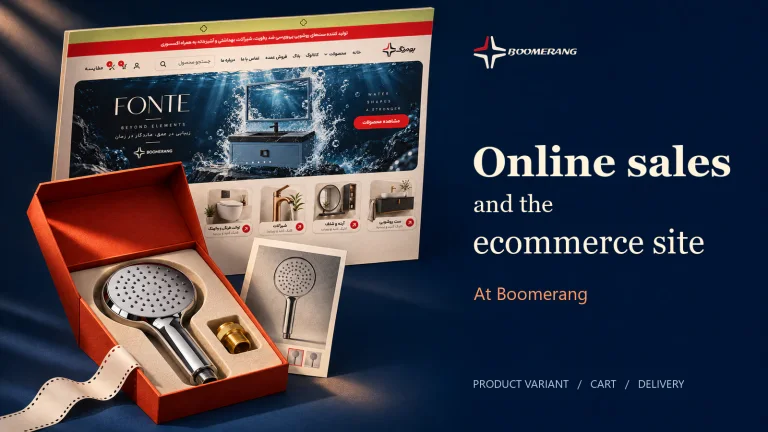
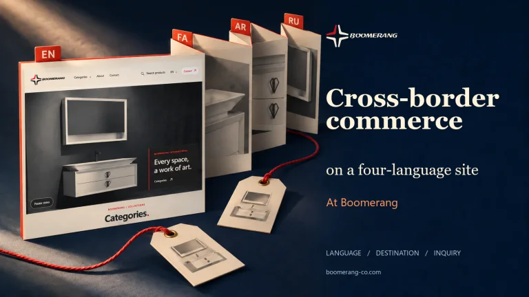
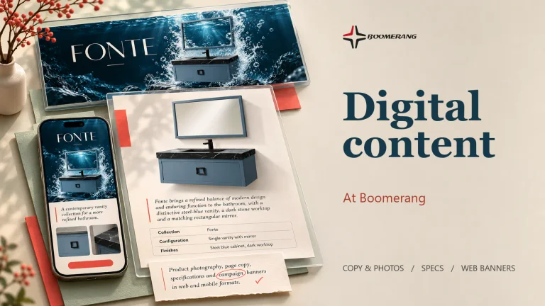
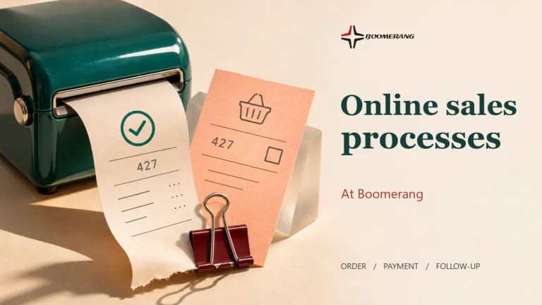
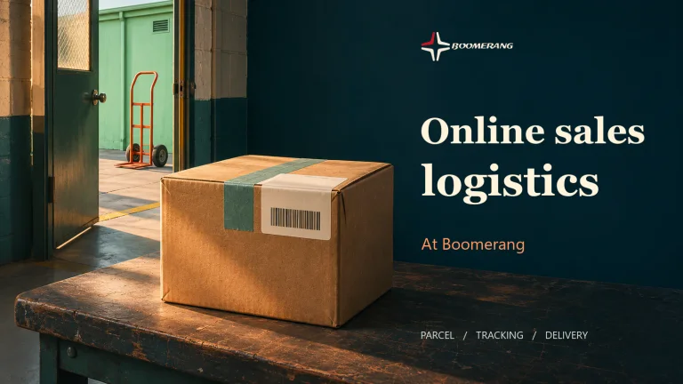
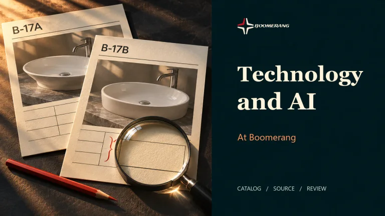

Story outline
WHAT WORK TAUGHT ME
Explore my experience and projectsStories from my work
From computers to marketing and online sales: experiences and what I learned in practice.
Boomerang
Online Sales Lead
Bathroom furniture and faucet manufacturing and trade
Stories from this experience

Online sales and the ecommerce site
Read the story
Cross-border commerce on a four-language site
Read the story
Digital content
Read the story
Online sales processes
Read the story
Online sales logistics
Read the story
Technology and AI
Read the storyMy work in this role
I launched, managed and expanded Boomerang’s online sales channels.
I set up and managed international online sales through a four-language website.
Online Tahrir
Digital Marketing Supervisor
Digital marketing & online sales
Stories from this experience
My work in this role
I launched online sales and managed day-to-day e-commerce operations.
I led a five-person team covering digital channels, content and online sales support.
CAN
Marketing Specialist
Home appliances
Stories from this experience
My work in this role
I developed marketing strategy and planned budgets for online and offline advertising.
My work included marketing at international exhibitions and preparing digital content for the sales network.
Pouyesh Rayan Datis
Marketing & Market Research Specialist
Market research & go-to-market
Stories from this experience
My work in this role
I planned what to ask in the field and what we could learn from existing research and online data.
I used the findings to plan marketing and budgets for both existing and new products.
BiNiCi Trading
Sales Specialist
Sales strategy & analytics
Stories from this experience
My work in this role
I used the sales dashboard to plan marketing activities.
I set budgets using market demand and the sales plan for each product.
Safir Language Academy
Marketing Supervisor
Education & service marketing
Stories from this experience
These are the topics I’m working on. As each story is published, you’ll be able to read it here.
Story outline
What the voice of the customer told us
Story outline
Language learning at the cinema
My work in this role
I planned and ran online and offline marketing by region.
I worked with the customer feedback team and marketed services offered alongside language classes.
Two examples were promoting language learning at the cinema and day trips conducted in English.
Safir Language Academy
Regional Marketing Specialist
Field & outbound marketing
Stories from this experience
These are the topics I’m working on. As each story is published, you’ll be able to read it here.
Story outline
A promotional counter through a passerby’s eyes
Story outline
Coordinating promoters in the field
Story outline
Starting conversations with local organisations
My work in this role
I planned in-person campaigns and coordinated promotional counters and staff in shopping centres and Safir branches.
I visited local organisations, gathered information and followed up with prospective customers.
Asiatech
Internet Installation & Support Specialist
Technology & support
Stories from this experience
These are the topics I’m working on. As each story is published, you’ll be able to read it here.
Story outline
What I checked before an installation
Story outline
From a problem report to a diagnosis
Story outline
Making a technical answer clear to a user
My work in this role
I installed customers’ internet connections and helped them troubleshoot connection problems.